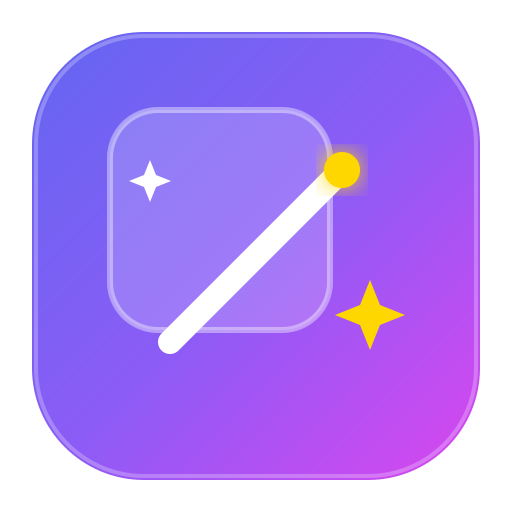

1
바로가기 이름
https://example.com
바탕화면 / 홈 화면에 추가하는 방법
PC 크롬 (Windows / Mac)
브라우저 주소창 우측의 [앱 설치 🖥️] 아이콘을 누르거나, 메뉴(⋮) → [저장 및 공유] → [바로가기 만들기]를 누르세요.
모바일 크롬 (Android)
우측 상단 메뉴 (⋮) 누른 뒤 [홈 화면에 추가] 또는 [앱 설치]를 누르세요.
사파리 (iPhone / iPad)
하단 공유 버튼 (↑)을 누른 뒤 [홈 화면에 추가]를 누르세요.